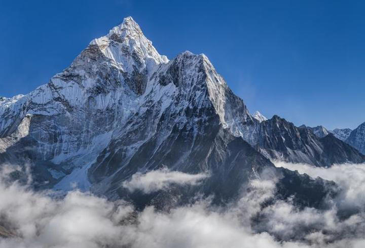

Top News
-

Arda Güler outperformed Real Madrid's new transfer Mbappe! The Spanish announced, exactly 180 million Euros...
La Liga and Champions League champion Real Madrid announced that they have added Kylian Mbappe to their squad. In a statement made by Los Blancos, it was reported that a five-year contract was signed with the French star.
3 hours ago | Source: GazeteVatan
-

Life advice from robot to human
Researchers at the Massachusetts Institute of Technology (MIT) in the US have created an AI-powered chatbot that simulates the older personas of young users and offers their observations and sage advice. The aim of the project, called “Future You,” is to encourage people to think more about the person they want to be in the future. The chatbot, which produces plausible artificial memories, uses the user’s current desires to tell stories about successful lives.
5 hours ago | Source: Milliyet
-
2 shark attacks on the same day! 3 people injured...
Two separate shark attacks occurred on a beach in South Walton, Florida, on Friday. Authorities said in a statement regarding the attacks: “The South Walton Fire District and the Walton County Sheriff’s Office responded to two shark-related incidents Friday afternoon in Florida. Two people were seriously injured, and one person was slightly injured.
8 hours ago | Source: Hürriyet
-

The world's highest garbage dump! 11 tons of garbage found on three Himalayan peaks
The Nepalese army has said it has collected 11 tonnes of garbage, four corpses and one skeleton from Mount Everest and two other Himalayan peaks this year. It took soldiers 55 days to collect the garbage and bodies from Mount Everest, Nuptse and Lhotse. It is estimated that there are more than 50 tonnes of garbage and 200 bodies on Everest. The clean-up efforts on the mountain, often referred to as the ‘world’s highest garbage dump’, were launched in 2019 after concerns about crowds and dangerous conditions as climbers lined up to reach the summit. The army said that a total of 119 tonnes of garbage, 14 corpses and some skeletons were brought back in five clean-up operations. Content Video - The much-talked-about footage! Gang members searched half-naked faint Authorities hope to reduce litter this year and have climbers wear tracking devices to facilitate rescue operations and have climbers bring their own excrement from the summit. Rakesh Gurung, director of the Nepal Mountaineering Tourism Corporation, told the BBC that the government plans to set up mountain patrols to monitor litter in the future and allocate more financial resources. The government issued permits to climb the summit to 421 climbers during the spring climbing season, which ended in May. Last year, a record was broken when 478 were issued. That number does not include Nepalese guides. An estimated 600 people have climbed the mountain this year. Eight climbers have also died or gone missing this year. Last year, the number was 19. Gurung said the number of permits to climb the summit had fallen due to the global economic downturn. China issuing permits and elections in India have also contributed to the decline. The number is expected to fall further after the Nepalese Supreme Court ordered the government to reduce the number of permits.
1 day ago | Source: CnnTürk